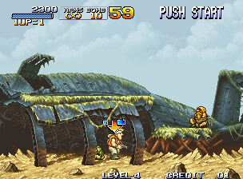

← 大厅
合金弹头1
METAL SLUG · NEO GEO 原版
声音关
全屏

NAZCA / SNK · 1996 街机原版
合金弹头
原版关卡 · 武器 · 救援 · 载具
加载原版游戏 ↗
首次加载约 24 MB，之后模拟器内核会缓存。
已暂停
继续游戏 ▶
加载后：投币 → 开始 → 进入任务
Ⅱ
↑
←
→
↓
投币
COIN
开始
START
连发 开
射击
按住连发 · J
跳跃
K
手雷
L · 原版数量限制
手机建议横屏 · 支持移动、射击、跳跃、扔手雷
重新启动